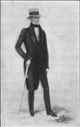
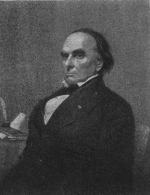

The New England Federalists, at the Hartford convention, prophesied that in time the West would dominate the East. "At the adoption of the Constitution," they said, "a certain balance of power among the original states was considered to exist, and there was at that time and yet is among those parties a strong affinity between their great and general interests. By the admission of these [new] states that balance has been materially affected and unless the practice be modified must ultimately be destroyed. The Southern states will first avail themselves of their new confederates to govern the East, and finally the Western states, multiplied in number, and augmented in population, will control the interests of the whole."
Strangely enough the fulfillment of this prophecy was being prepared even in Federalist strongholds by the rise of a new urban democracy that was to make common cause with the farmers beyond the mountains.
The Democratic Movement in the East
The Aristocratic Features of the Old Order. —The Revolutionary fathers, in setting up their first state constitutions, although they often spoke of government as founded on the consent of the governed, did not think that consistency required giving the vote to all adult males. On the contrary they looked upon property owners as the only safe "depositary" of political power. They went back to the colonial tradition that related taxation and representation. This, they argued, was not only just but a safeguard against the
"excesses of democracy."
In carrying their theory into execution they placed taxpaying or property qualifications on the right to vote.
Broadly speaking, these limitations fell into three classes. Three states, Pennsylvania (1776), New Hampshire (1784), and Georgia (1798), gave the ballot to all who paid taxes, without reference to the value of their property. Three, Virginia, Delaware, and Rhode Island, clung firmly to the ancient principles that only freeholders could be intrusted with electoral rights. Still other states, while closely restricting the suffrage, accepted the ownership of other things as well as land in fulfillment of the requirements. In Massachusetts, for instance, the vote was granted to all men who held land yielding an annual income of three pounds or possessed other property worth sixty pounds.
The electors thus enfranchised, numerous as they were, owing to the wide distribution of land, often suffered from a very onerous disability. In many states they were able to vote only for persons of wealth because heavy property qualifications were imposed on public officers. In New Hampshire, the governor had to be worth five hundred pounds, one-half in land; in Massachusetts, one thousand pounds, all freehold; in Maryland, five thousand pounds, one thousand of which was freehold; in North Carolina, one thousand pounds freehold; and in South Carolina, ten thousand pounds freehold. A state senator in Massachusetts had to be the owner of a freehold worth three hundred pounds or personal property worth six hundred pounds; in New Jersey, one thousand pounds' worth of property; in North Carolina, three hundred acres of land; in South Carolina, two thousand pounds freehold. For members of the lower house of the legislature lower qualifications were required.
In most of the states the suffrage or office holding or both were further restricted by religious provisions.
No single sect was powerful enough to dominate after the Revolution, but, for the most part, Catholics and Jews were either disfranchised or excluded from office. North Carolina and Georgia denied the ballot to any one who was not a Protestant. Delaware withheld it from all who did not believe in the Trinity and the inspiration of the Scriptures. Massachusetts and Maryland limited it to Christians. Virginia and New York, advanced for their day, made no discrimination in government on account of religious opinion.
The Defense of the Old Order. —It must not be supposed that property qualifications were thoughtlessly imposed at the outset or considered of little consequence in practice. In the beginning they were viewed as fundamental. As towns grew in size and the number of landless citizens increased, the restrictions were defended with even more vigor. In Massachusetts, the great Webster upheld the rights of property in government, saying: "It is entirely just that property should have its due weight and consideration in political arrangements.... The disastrous revolutions which the world has witnessed, those political thunderstorms and earthquakes which have shaken the pillars of society to their deepest foundations, have been revolutions against property." In Pennsylvania, a leader in local affairs cried out against a plan to remove the taxpaying limitation on the suffrage: "What does the delegate propose? To place the vicious vagrant, the wandering Arabs, the Tartar hordes of our large cities on the level with the virtuous and good man?" In Virginia, Jefferson himself had first believed in property qualifications and had feared with genuine alarm the "mobs of the great cities." It was near the end of the eighteenth century before he accepted the idea of manhood suffrage. Even then he was unable to convince the constitution-makers of his own state. "It is not an idle chimera of the brain," urged one of them, "that the possession of land furnishes the strongest evidence of permanent, common interest with, and attachment to, the community....
It is upon this foundation I wish to place the right of suffrage. This is the best general standard which can be resorted to for the purpose of determining whether the persons to be invested with the right of suffrage are such persons as could be, consistently with the safety and well-being of the community, intrusted with the exercise of that right."
Attacks on the Restricted Suffrage. —The changing circumstances of American life, however, soon challenged the rule of those with property. Prominent among the new forces were the rising mercantile and business interests. Where the freehold qualification was applied, business men who did not own land were deprived of the vote and excluded from office. In New York, for example, the most illiterate farmer who had one hundred pounds' worth of land could vote for state senator and governor, while the landless banker or merchant could not. It is not surprising, therefore, to find business men taking the lead in breaking down freehold limitations on the suffrage. The professional classes also were interested in removing the barriers which excluded many of them from public affairs. It was a schoolmaster, Thomas Dorr, who led the popular uprising in Rhode Island which brought the exclusive rule by freeholders to an end.
In addition to the business and professional classes, the mechanics of the towns showed a growing hostility to a system of government that generally barred them from voting or holding office. Though not numerous, they had early begun to exercise an influence on the course of public affairs. They had led the riots against the Stamp Act, overturned King George's statue, and "crammed stamps down the throats of collectors." When the state constitutions were framed they took a lively interest, particularly in New York City and Philadelphia. In June, 1776, the "mechanicks in union" in New York protested against putting the new state constitution into effect without their approval, declaring that the right to vote on the acceptance or rejection of a fundamental law "is the birthright of every man to whatever state he may belong." Though their petition was rejected, their spirit remained. When, a few years later, the federal Constitution was being framed, the mechanics watched the process with deep concern; they knew that one of its main objects was to promote trade and commerce, affecting directly their daily bread. During the struggle over ratification, they passed resolutions approving its provisions and they often joined in parades organized to stir up sentiment for the Constitution, even though they could not vote for members of the state conventions and so express their will directly. After the organization of trade unions they collided with the
courts of law and thus became interested in the election of judges and lawmakers.
Those who attacked the old system of class rule found a strong moral support in the Declaration of Independence. Was it not said that all men are created equal? Whoever runs may read. Was it not declared that governments derive their just power from the consent of the governed? That doctrine was applied with effect to George III and seemed appropriate for use against the privileged classes of Massachusetts or Virginia. "How do the principles thus proclaimed," asked the non-freeholders of Richmond, in petitioning for the ballot, "accord with the existing regulation of the suffrage? A regulation which, instead of the equality nature ordains, creates an odious distinction between members of the same community ... and vests in a favored class, not in consideration of their public services but of their private possessions, the highest of all privileges."
Abolition of Property Qualifications. —By many minor victories rather than by any spectacular triumphs did the advocates of manhood suffrage carry the day. Slight gains were made even during the Revolution or shortly afterward. In Pennsylvania, the mechanics, by taking an active part in the contest over the Constitution of 1776, were able to force the qualification down to the payment of a small tax. Vermont came into the union in 1792 without any property restrictions. In the same year Delaware gave the vote to all men who paid taxes. Maryland, reckoned one of the most conservative of states, embarked on the experiment of manhood suffrage in 1809; and nine years later, Connecticut, equally conservative, decided that all taxpayers were worthy of the ballot.
Five states, Massachusetts, New York, Virginia, Rhode Island, and North Carolina, remained obdurate while these changes were going on around them; finally they had to yield themselves. The last struggle in Massachusetts took place in the constitutional convention of 1820. There Webster, in the prime of his manhood, and John Adams, in the closing years of his old age, alike protested against such radical innovations as manhood suffrage. Their protests were futile. The property test was abolished and a small taxpaying qualification was substituted. New York surrendered the next year and, after trying some minor restrictions for five years, went completely over to white manhood suffrage in 1826. Rhode Island clung to her freehold qualification through thirty years of agitation. Then Dorr's Rebellion, almost culminating in bloodshed, brought about a reform in 1843 which introduced a slight taxpaying qualification as an alternative to the freehold. Virginia and North Carolina were still unconvinced. The former refused to abandon ownership of land as the test for political rights until 1850 and the latter until 1856. Although religious discriminations and property qualifications for office holders were sometimes retained after the establishment of manhood suffrage, they were usually abolished along with the monopoly of government enjoyed by property owners and taxpayers.
Thomas Dorr Arousing His
Followers
Thomas Dorr Arousing His Followers
At the end of the first quarter of the nineteenth century, the white male industrial workers and the mechanics of the Northern cities, at least, could lay aside the petition for the ballot and enjoy with the free farmer a voice in the government of their common country. "Universal democracy," sighed Carlyle, who was widely read in the United States, "whatever we may think of it has declared itself the inevitable fact of the days in which we live; and he who has any chance to instruct or lead in these days must begin by admitting that ... Where no government is wanted, save that of the parish constable, as in America with its boundless soil, every man being able to find work and recompense for himself, democracy may subsist; not elsewhere." Amid the grave misgivings of the first generation of statesmen, America was committed to the great adventure, in the populous towns of the East as well as in the forests and fields of the West.
The New Democracy Enters the Arena
The spirit of the new order soon had a pronounced effect on the machinery of government and the practice of politics. The enfranchised electors were not long in demanding for themselves a larger share in administration.
The Spoils System and Rotation in Office. —First of all they wanted office for themselves, regardless of their fitness. They therefore extended the system of rewarding party workers with government positions—a system early established in several states, notably New York and Pennsylvania. Closely connected with it was the practice of fixing short terms for officers and making frequent changes in personnel. "Long continuance in office," explained a champion of this idea in Pennsylvania in 1837,
"unfits a man for the discharge of its duties, by rendering him arbitrary and aristocratic, and tends to beget, first life office, and then hereditary office, which leads to the destruction of free government." The solution offered was the historic doctrine of "rotation in office." At the same time the principle of popular election was extended to an increasing number of officials who had once been appointed either by the governor or the legislature. Even geologists, veterinarians, surveyors, and other technical officers were declared elective on the theory that their appointment "smacked of monarchy."
Popular Election of Presidential Electors. —In a short time the spirit of democracy, while playing havoc with the old order in state government, made its way upward into the federal system. The framers of the Constitution, bewildered by many proposals and unable to agree on any single plan, had committed the choice of presidential electors to the discretion of the state legislatures. The legislatures, in turn, greedy of power, early adopted the practice of choosing the electors themselves; but they did not enjoy it long undisturbed. Democracy, thundering at their doors, demanded that they surrender the privilege to the people. Reluctantly they yielded, sometimes granting popular election and then withdrawing it. The drift was inevitable, and the climax came with the advent of Jacksonian democracy. In 1824, Vermont, New York, Delaware, South Carolina, Georgia, and Louisiana, though some had experimented with popular election, still left the choice of electors with the legislature. Eight years later South Carolina alone held to the old practice. Popular election had become the final word. The fanciful idea of an electoral college of
"good and wise men," selected without passion or partisanship by state legislatures acting as deliberative bodies, was exploded for all time; the election of the nation's chief magistrate was committed to the tempestuous methods of democracy.
The Nominating Convention. —As the suffrage was widened and the popular choice of presidential electors extended, there arose a violent protest against the methods used by the political parties in nominating candidates. After the retirement of Washington, both the Republicans and the Federalists found it necessary to agree upon their favorites before the election, and they adopted a colonial device—the pre-election caucus. The Federalist members of Congress held a conference and selected their candidate, and the Republicans followed the example. In a short time the practice of nominating by a
"congressional caucus" became a recognized institution. The election still remained with the people; but the power of picking candidates for their approval passed into the hands of a small body of Senators and Representatives.
A reaction against this was unavoidable. To friends of "the plain people," like Andrew Jackson, it was intolerable, all the more so because the caucus never favored him with the nomination. More conservative men also found grave objections to it. They pointed out that, whereas the Constitution intended the President to be an independent officer, he had now fallen under the control of a caucus of congressmen.
The supremacy of the legislative branch had been obtained by an extra-legal political device. To such objections were added practical considerations. In 1824, when personal rivalry had taken the place of party conflicts, the congressional caucus selected as the candidate, William H. Crawford, of Georgia, a man of distinction but no great popularity, passing by such an obvious hero as General Jackson. The followers of the General were enraged and demanded nothing short of the death of "King Caucus." Their clamor was effective. Under their attacks, the caucus came to an ignominious end.
In place of it there arose in 1831 a new device, the national nominating convention, composed of delegates elected by party voters for the sole purpose of nominating candidates. Senators and Representatives were still prominent in the party councils, but they were swamped by hundreds of delegates "fresh from the people," as Jackson was wont to say. In fact, each convention was made up mainly of office holders and office seekers, and the new institution was soon denounced as vigorously as King Caucus had been, particularly by statesmen who failed to obtain a nomination. Still it grew in strength and by 1840 was firmly established.
The End of the Old Generation. —In the election of 1824, the representatives of the "aristocracy" made their last successful stand. Until then the leadership by men of "wealth and talents" had been undisputed.
There had been five Presidents—Washington, John Adams, Jefferson, Madison, and Monroe—all Eastern men brought up in prosperous families with the advantages of culture which come from leisure and the possession of life's refinements. None of them had ever been compelled to work with his hands for a livelihood. Four of them had been slaveholders. Jefferson was a philosopher, learned in natural science, a master of foreign languages, a gentleman of dignity and grace of manner, notwithstanding his studied simplicity. Madison, it was said, was armed "with all the culture of his century." Monroe was a graduate of William and Mary, a gentleman of the old school. Jefferson and his three successors called themselves Republicans and professed a genuine faith in the people but they were not "of the people" themselves; they were not sons of the soil or the workshop. They were all men of "the grand old order of society" who gave finish and style even to popular government.
Monroe was the last of the Presidents belonging to the heroic epoch of the Revolution. He had served in the war for independence, in the Congress under the Articles of Confederation, and in official capacity after the adoption of the Constitution. In short, he was of the age that had wrought American independence and set the government afloat. With his passing, leadership went to a new generation; but his successor, John Quincy Adams, formed a bridge between the old and the new in that he combined a high degree of culture with democratic sympathies. Washington had died in 1799, preceded but a few months by Patrick Henry and followed in four years by Samuel Adams. Hamilton had been killed in a duel with Burr in 1804.
Thomas Jefferson and John Adams were yet alive in 1824 but they were soon to pass from the scene, reconciled at last, full of years and honors. Madison was in dignified retirement, destined to live long enough to protest against the doctrine of nullification proclaimed by South Carolina before death carried him away at the ripe old age of eighty-five.
The Election of John Quincy Adams (1824). —The campaign of 1824 marked the end of the "era of good feeling" inaugurated by the collapse of the Federalist party after the election of 1816. There were four leading candidates, John Quincy Adams, Andrew Jackson, Henry Clay, and W.H. Crawford. The result of the election was a division of the electoral votes into four parts and no one received a majority. Under the Constitution, therefore, the selection of President passed to the House of Representatives. Clay, who stood at the bottom of the poll, threw his weight to Adams and assured his triumph, much to the chagrin of Jackson's friends. They thought, with a certain justification, that inasmuch as the hero of New Orleans had received the largest electoral vote, the House was morally bound to accept the popular judgment and make him President. Jackson shook hands cordially with Adams on the day of the inauguration, but never forgave him for being elected.
While Adams called himself a Republican in politics and often spoke of "the rule of the people," he was regarded by Jackson's followers as "an aristocrat." He was not a son of the soil. Neither was he acquainted at first hand with the labor of farmers and mechanics. He had been educated at Harvard and in Europe.
Like his illustrious father, John Adams, he was a stern and reserved man, little given to seeking popularity.
Moreover, he was from the East and the frontiersmen of the West regarded him as a man "born with a silver spoon in his mouth." Jackson's supporters especially disliked him because they thought their hero entitled to the presidency. Their anger was deepened when Adams appointed Clay to the office of

Secretary of State; and they set up a cry that there had been a "deal" by which Clay had helped to elect Adams to get office for himself.
Though Adams conducted his administration with great dignity and in a fine spirit of public service, he was unable to overcome the opposition which he encountered on his election to office or to win popularity in the West and South. On the contrary, by advocating government assistance in building roads and canals and public grants in aid of education, arts, and sciences, he ran counter to the current which had set in against appropriations of federal funds for internal improvements. By signing the Tariff Bill of 1828, soon known as the "Tariff of Abominations," he made new enemies without adding to his friends in New York, Pennsylvania, and Ohio where he sorely needed them. Handicapped by the false charge that he had been a party to a "corrupt bargain" with Clay to secure his first election; attacked for his advocacy of a high protective tariff; charged with favoring an "aristocracy of office-holders" in Washington on account of his refusal to discharge government clerks by the wholesale, Adams was retired from the White House after he had served four years.
Andrew Jackson
The Triumph of Jackson in 1828. —Probably no candidate for the presidency ever had such passionate popular support as Andrew Jackson had in 1828. He was truly a man of the people. Born of poor parents in the upland region of South Carolina, schooled in poverty and adversity, without the advantages of education or the refinements of cultivated leisure, he seemed the embodiment of the spirit of the new American democracy. Early in his youth he had gone into the frontier of Tennessee where he soon won a name as a fearless and intrepid Indian fighter. On the march and in camp, he endeared himself to his men by sharing their hardships, sleeping on the ground with them, and eating parched corn when nothing better could be found for the privates. From local prominence he sprang into national fame by his exploit at the battle of New Orleans. His reputation as a military hero was enhanced by the feeling that he had been a martyr to political treachery in 1824. The farmers of the West and South claimed him as their own. The mechanics of the Eastern cities, newly enfranchised, also looked upon him as their friend. Though his views on the tariff, internal improvements, and other issues before the country were either vague or unknown, he was readily elected President.
The returns of the electoral vote in 1828 revealed the sources of Jackson's power. In New England, he received but one ballot, from Maine; he had a majority of the electors in New York and all of them in Pennsylvania; and he carried every state south of Maryland and beyond the Appalachians. Adams did not get a single electoral vote in the South and West. The prophecy of the Hartford convention had been fulfilled.
When Jackson took the oath of office on March 4, 1829, the government of the United States entered into a new era. Until this time the inauguration of a President—even that of Jefferson, the apostle of simplicity—had brought no rude shock to the course of affairs at the capital. Hitherto the installation of a President meant that an old-fashioned gentleman, accompanied by a few servants, had driven to the White House in his own coach, taken the oath with quiet dignity, appointed a few new men to the higher posts, continued in office the long list of regular civil employees, and begun his administration with respectable decorum. Jackson changed all this. When he was inaugurated, men and women journeyed hundreds of miles to witness the ceremony. Great throngs pressed into the White House, "upset the bowls of punch, broke the glasses, and stood with their muddy boots on the satin-covered chairs to see the people's President." If Jefferson's inauguration was, as he called it, the "great revolution," Jackson's inauguration was a cataclysm.
The New Democracy at Washington
The Spoils System. —The staid and respectable society of Washington was disturbed by this influx of farmers and frontiersmen. To speak of politics became "bad form" among fashionable women. The clerks and civil servants of the government who had enjoyed long and secure tenure of office became alarmed at the clamor of new men for their positions. Doubtless the major portion of them had opposed the election of Jackson and looked with feelings akin to contempt upon him and his followers. With a hunter's instinct, Jackson scented his prey. Determined to have none but his friends in office, he made a clean sweep, expelling old employees to make room for men "fresh from the people." This was a new custom. Other Presidents had discharged a few officers for engaging in opposition politics. They had been careful in making appointments not to choose inveterate enemies; but they discharged relatively few men on account of their political views and partisan activities.
By wholesale removals and the frank selection of officers on party grounds—a practice already well intrenched in New York—Jackson established the "spoils system" at Washington. The famous slogan, "to the victor belong the spoils of victory," became the avowed principle of the national government.
Statesmen like Calhoun denounced it; poets like James Russell Lowell ridiculed it; faithful servants of the government suffered under it; but it held undisturbed sway for half a century thereafter, each succeeding generation outdoing, if possible, its predecessor in the use of public office for political purposes. If any one remarked that training and experience were necessary qualifications for important public positions, he met Jackson's own profession of faith: "The duties of any public office are so simple or admit of being made so simple that any man can in a short time become master of them."
The Tariff and Nullification. —Jackson had not been installed in power very long before he was compelled to choose between states' rights and nationalism. The immediate occasion of the trouble was the tariff—a matter on which Jackson did not have any very decided views. His mind did not run naturally to abstruse economic questions; and owing to the divided opinion of the country it was "good politics" to be vague and ambiguous in the controversy. Especially was this true, because the tariff issue was threatening to split the country into parties again.
The Development of the Policy of "Protection." —The war of 1812 and the commercial policies of England which followed it had accentuated the need for American economic independence. During that conflict, the United States, cut off from English manufactures as during the Revolution, built up home industries to meet the unusual call for iron, steel, cloth, and other military and naval supplies as well as the demands from ordinary markets. Iron foundries and textile mills sprang up as in the night; hundreds of business men invested fortunes in industrial enterprises so essential to the military needs of the government; and the people at large fell into the habit of buying American-made goods again. As the London Times tersely observed of the Americans, "their first war with England made them independent; their second war made them formidable."
In recognition of this state of affairs, the tariff of 1816 was designed: first, to prevent England from ruining these "infant industries" by dumping the accumulated stores of years suddenly upon American markets; and, secondly, to enlarge in the manufacturing centers the demand for American agricultural produce. It accomplished the purposes of its framers. It kept in operation the mills and furnaces so recently built. It multiplied the number of industrial workers and enhanced the demand for the produce of the soil.
It brought about another very important result. It turned the capital and enterprise of New England from shipping to manufacturing, and converted her statesmen, once friends of low tariffs, into ardent advocates of protection.
In the early years of the nineteenth century, the Yankees had bent their energies toward building and operating ships to carry produce from America to Europe and manufactures from Europe to America. For this reason, they had opposed the tariff of 1816 calculated to increase domestic production and cut down the carrying trade. Defeated in their efforts, they accepted the inevitable and turned to manufacturing.
Soon they were powerful friends of protection for American enterprise. As the money invested and the labor employed in the favored industries increased, the demand for continued and heavier protection grew apace. Even the farmers who furnished raw materials, like wool, flax, and hemp, began to see eye to eye with the manufacturers. So the textile interests of New England, the iron masters of Connecticut, New Jersey, and Pennsylvania, the wool, hemp, and flax growers of Ohio, Kentucky, and Tennessee, and the sugar planters of Louisiana developed into a formidable combination in support of a high protective tariff.
The Planting States Oppose the Tariff. —In the meantime, the cotton states on the seaboard had forgotten about the havoc wrought during the Napoleonic wars when their produce rotted because there were no ships to carry it to Europe. The seas were now open. The area devoted to cotton had swiftly expanded as Alabama, Mississippi, and Louisiana were opened up. Cotton had in fact become "king" and the planters depended for their prosperity, as they thought, upon the sale of their staple to English manufacturers whose spinning and weaving mills were the wonder of the world. Manufacturing nothing and having to buy nearly everything except farm produce and even much of that for slaves, the planters naturally wanted to purchase manufactures in the cheapest market, England, where they sold most of their cotton. The tariff, they contended, raised the price of the goods they had to buy and was thus in fact a tribute laid on them for the benefit of the Northern mill owners.
The Tariff of Abominations. —They were overborne, however, in 1824 and again in 1828 when Northern manufacturers and Western farmers forced Congress to make an upward revision of the tariff. The Act of 1828 known as "the Tariff of Abominations," though slightly modified in 1832, was "the straw which broke the camel's back." Southern leaders turned in rage against the whole system. The legislatures of Virginia, North Carolina, South Carolina, Georgia, and Alabama denounced it; a general convention of delegates held at Augusta issued a protest of defiance against it; and South Carolina, weary of verbal battles, decided to prevent its enforcement.
South Carolina Nullifies the Tariff. —The legislature of that state, on October 26, 1832, passed a bill calling for a state convention which duly assembled in the following month. In no mood for compromise, it adopted the famous Ordinance of Nullification after a few days' debate. Every line of this document was clear and firm. The tariff, it opened, gives "bounties to classes and individuals ... at the expense and to the injury and oppression of other classes and individuals"; it is a violation of the Constitution of the United States and therefore null and void; its enforcement in South Carolina is unlawful; if the federal government attempts to coerce the state into obeying the law, "the people of this state will thenceforth hold themselves absolved from all further obligations to maintain or preserve their political connection with the people of the other states and will forthwith proceed to organize a separate government and do all other acts and things which sovereign and independent states may of right do."
Southern States Condemn Nullification. —The answer of the country to this note of defiance, couched in

the language used in the Kentucky resolutions and by the New England Federalists during the war of 1812, was quick and positive. The legislatures of the Southern states, while condemning the tariff, repudiated the step which South Carolina had taken. Georgia responded: "We abhor the doctrine of nullification as neither a peaceful nor a constitutional remedy." Alabama found it "unsound in theory and dangerous in practice." North Carolina replied that it was "revolutionary in character, subversive of the Constitution of the United States." Mississippi answered: "It is disunion by force—it is civil war." Virginia spoke more softly, condemning the tariff and sustaining the principle of the Virginia resolutions but denying that South Carolina could find in them any sanction for her proceedings.
Jackson Firmly Upholds the Union. —The eyes of the country were turned upon Andrew Jackson. It was known that he looked with no friendly feelings upon nullification, for, at a Jefferson dinner in the spring of 1830 while the subject was in the air, he had with laconic firmness announced a toast: "Our federal union; it must be preserved." When two years later the open challenge came from South Carolina, he replied that he would enforce the law, saying with his frontier directness: "If a single drop of blood shall be shed there in opposition to the laws of the United States, I will hang the first man I can lay my hands on engaged in such conduct upon the first tree that I can reach." He made ready to keep his word by preparing for the use of military and naval forces in sustaining the authority of the federal government. Then in a long and impassioned proclamation to the people of South Carolina he pointed out the national character of the union, and announced his solemn resolve to preserve it by all constitutional means. Nullification he branded as "incompatible with the existence of the union, contradicted expressly by the letter of the Constitution, unauthorized by its spirit, inconsistent with every principle on which it was founded, and destructive of the great objects for which it was formed."
A Compromise. —In his messages to Congress, however, Jackson spoke the language of conciliation. A few days before issuing his proclamation he suggested that protection should be limited to the articles of domestic manufacture indispensable to safety in war time, and shortly afterward he asked for new legislation to aid him in enforcing the laws. With two propositions before it, one to remove the chief grounds for South Carolina's resistance and the other to apply force if it was continued, Congress bent its efforts to avoid a crisis. On February 12, 1833, Henry Clay laid before the Senate a compromise tariff bill providing for the gradual reduction of the duties until by 1842 they would reach the level of the law which Calhoun had supported in 1816. About the same time the "force bill," designed to give the President ample authority in executing the law in South Carolina, was taken up. After a short but acrimonious debate, both measures were passed and signed by President Jackson on the same day, March 2. Looking upon the reduction of the tariff as a complete vindication of her policy and an undoubted victory, South Carolina rescinded her ordinance and enacted another nullifying the force bill.
From an old print
Daniel Webster
The Webster-Hayne Debate. —Where the actual victory lay in this quarrel, long the subject of high dispute,
need not concern us to-day. Perhaps the chief result of the whole affair was a clarification of the issue between the North and the South—a definite statement of the principles for which men on both sides were years afterward to lay down their lives. On behalf of nationalism and a perpetual union, the stanch old Democrat from Tennessee had, in his proclamation on nullification, spoken a language that admitted of only one meaning. On behalf of nullification, Senator Hayne, of South Carolina, a skilled lawyer and courtly orator, had in a great speech delivered in the Senate in January, 1830, set forth clearly and cogently the doctrine that the union is a compact among sovereign states from which the parties may lawfully withdraw. It was this address that called into the arena Daniel Webster, Senator from Massachusetts, who, spreading the mantle of oblivion over the Hartford convention, delivered a reply to Hayne that has been reckoned among the powerful orations of all time—a plea for the supremacy of the Constitution and the national character of the union.
The War on the United States Bank. —If events forced the issue of nationalism and nullification upon Jackson, the same could not be said of his attack on the bank. That institution, once denounced by every true Jeffersonian, had been
reëstablished in 1816 under the administration of Jefferson's disciple, James Madison. It had not been in operation very long, however, before it aroused bitter opposition, especially in the South and the West. Its notes drove out of circulation the paper currency of unsound banks chartered by the states, to the great anger of local financiers. It was accused of favoritism in making loans, of conferring special privileges upon politicians in return for their support at Washington. To all Jackson's followers it was "an insidious money power." One of them openly denounced it as an institution designed "to strengthen the arm of wealth and counterpoise the influence of extended suffrage in the disposition of public affairs."
This sentiment President Jackson fully shared. In his first message to Congress he assailed the bank in vigorous language. He declared that its constitutionality was in doubt and alleged that it had failed to establish a sound and uniform currency. If such an institution was necessary, he continued, it should be a public bank, owned and managed by the government, not a private concern endowed with special privileges by it. In his second and third messages, Jackson came back to the subject, leaving the decision, however, to "an enlightened people and their representatives."
Moved by this frank hostility and anxious for the future, the bank applied to Congress for a renewal of its charter in 1832, four years before the expiration of its life. Clay, with his eye upon the presidency and an issue for the campaign, warmly supported the application. Congress, deeply impressed by his leadership, passed the bill granting the new charter, and sent the open defiance to Jackson. His response was an instant veto. The battle was on and it raged with fury until the close of his second administration, ending in the destruction of the bank, a disordered currency, and a national panic.
In his veto message, Jackson attacked the bank as unconstitutional and even hinted at corruption. He refused to assent to the proposition that the Supreme Court had settled the question of constitutionality by the decision in the McCulloch case. "Each public officer," he argued, "who takes an oath to support the Constitution, swears that he will support it as he understands it, not as it is understood by others."
Not satisfied with his veto and his declaration against the bank, Jackson ordered the Secretary of the Treasury to withdraw the government deposits which formed a large part of the institution's funds. This action he followed up by an open charge that the bank had used money shamefully to secure the return of its supporters to Congress. The Senate, stung by this charge, solemnly resolved that Jackson had "assumed upon himself authority and power not conferred by the Constitution and laws, but in derogation of both."
The effects of the destruction of the bank were widespread. When its charter expired in 1836, banking was once more committed to the control of the states. The state legislatures, under a decision rendered by the Supreme Court after the death of Marshall, began to charter banks under state ownership and control, with
full power to issue paper money—this in spite of the provision in the Constitution that states shall not issue bills of credit or make anything but gold and silver coin legal tender in the payment of debts. Once more the country was flooded by paper currency of uncertain value. To make matters worse, Jackson adopted the practice of depositing huge amounts of government funds in these banks, not forgetting to render favors to those institutions which supported him in politics—"pet banks," as they were styled at the time. In 1837, partially, though by no means entirely, as a result of the abolition of the bank, the country was plunged into one of the most disastrous panics which it ever experienced.
Internal Improvements Checked. —The bank had presented to Jackson a very clear problem—one of destruction. Other questions were not so simple, particularly the subject of federal appropriations in aid of roads and other internal improvements. Jefferson had strongly favored government assistance in such matters, but his administration was followed by a reaction. Both Madison and Monroe vetoed acts of Congress appropriating public funds for public roads, advancing as their reason the argument that the Constitution authorized no such laws. Jackson, puzzled by the clamor on both sides, followed their example without making the constitutional bar absolute. Congress, he thought, might lawfully build highways of a national and military value, but he strongly deprecated attacks by local interests on the federal treasury.
The Triumph of the Executive Branch. —Jackson's
reëlection in 1832 served to confirm his opinion that he was the chosen leader of the people, freed and instructed to ride rough shod over Congress and even the courts. No President before or since ever entertained in times of peace such lofty notions of executive prerogative. The entire body of federal employees he transformed into obedient servants of his wishes, a sign or a nod from him making and undoing the fortunes of the humble and the mighty. His lawful cabinet of advisers, filling all of the high posts in the government, he treated with scant courtesy, preferring rather to secure his counsel and advice from an unofficial body of friends and dependents who, owing to their secret methods and back stairs arrangements, became known as "the kitchen cabinet." Under the leadership of a silent, astute, and resourceful politician, Amos Kendall, this informal gathering of the faithful both gave and carried out decrees and orders, communicating the President's lightest wish or strictest command to the uttermost part of the country. Resolutely and in the face of bitter opposition Jackson had removed the deposits from the United States Bank. When the Senate protested against this arbitrary conduct, he did not rest until it was forced to expunge the resolution of condemnation; in time one of his lieutenants with his own hands was able to tear the censure from the records. When Chief Justice Marshall issued a decree against Georgia which did not suit him, Jackson, according to tradition, blurted out that Marshall could go ahead and enforce his own orders. To the end he pursued his willful way, finally even choosing his own successor.
The Rise of the Whigs
Jackson's Measures Arouse Opposition. —Measures so decided, policies so radical, and conduct so high-handed could not fail to arouse against Jackson a deep and exasperated opposition. The truth is the conduct of his entire administration profoundly disturbed the business and finances of the country. It was accompanied by conditions similar to those which existed under the Articles of Confederation. A paper currency, almost as unstable and irritating as the worthless notes of revolutionary days, flooded the country, hindering the easy transaction of business. The use of federal funds for internal improvements, so vital to the exchange of commodities which is the very life of industry, was blocked by executive vetoes.
The Supreme Court, which, under Marshall, had held refractory states to their obligations under the Constitution, was flouted; states' rights judges, deliberately selected by Jackson for the bench, began to sap and undermine the rulings of Marshall. The protective tariff, under which the textile industry of New England, the iron mills of Pennsylvania, and the wool, flax, and hemp farms of the West had flourished, had received a severe blow in the compromise of 1833 which promised a steady reduction of duties. To
cap the climax, Jackson's party, casting aside the old and reputable name of Republican, boldly chose for its title the term "Democrat," throwing down the gauntlet to every conservative who doubted the omniscience of the people. All these things worked together to evoke an opposition that was sharp and determined.
An Old Cartoon Ridiculing Clay's Tariff and Internal Improvement Program Clay and the National Republicans. —In this opposition movement, leadership fell to Henry Clay, a son of Kentucky, rather than to Daniel Webster of Massachusetts. Like Jackson, Clay was born in a home haunted by poverty. Left fatherless early and thrown upon his own resources, he went from Virginia into Kentucky where by sheer force of intellect he rose to eminence in the profession of law. Without the martial gifts or the martial spirit of Jackson, he slipped more easily into the social habits of the East at the same time that he retained his hold on the affections of the boisterous West. Farmers of Ohio, Indiana, and Kentucky loved him; financiers of New York and Philadelphia trusted him. He was thus a leader well fitted to gather the forces of opposition into union against Jackson.
Around Clay's standard assembled a motley collection, representing every species of political opinion, united by one tie only—hatred for "Old Hickory." Nullifiers and less strenuous advocates of states' rights were yoked with nationalists of Webster's school; ardent protectionists were bound together with equally ardent free traders, all fraternizing in one grand confusion of ideas under the title of "National Republicans." Thus the ancient and honorable term selected by Jefferson and his party, now abandoned by Jacksonian Democracy, was adroitly adopted to cover the supporters of Clay. The platform of the party, however, embraced all the old Federalist principles: protection for American industry; internal improvements; respect for the Supreme Court; resistance to executive tyranny; and denunciation of the spoils system. Though Jackson was easily victorious in 1832, the popular vote cast for Clay should have given him some doubts about the faith of "the whole people" in the wisdom of his "reign."
Van Buren and the Panic of 1837. —Nothing could shake the General's superb confidence. At the end of his second term he insisted on selecting his own successor; at a national convention, chosen by party voters, but packed with his office holders and friends, he nominated Martin Van Buren of New York.
Once more he proved his strength by carrying the country for the Democrats. With a fine flourish, he attended the inauguration of Van Buren and then retired, amid the applause and tears of his devotees, to the Hermitage, his home in Tennessee.
Fortunately for him, Jackson escaped the odium of a disastrous panic which struck the country with terrible force in the following summer. Among the contributory causes of this crisis, no doubt, were the destruction of the bank and the issuance of the "specie circular" of 1836 which required the purchasers of public lands to pay for them in coin, instead of the paper notes of state banks. Whatever the dominating cause, the ruin was widespread. Bank after bank went under; boom towns in the West collapsed; Eastern mills shut down; and working people in the industrial centers, starving from unemployment, begged for relief. Van Buren braved the storm, offering no measure of reform or assistance to the distracted people.
He did seek security for government funds by suggesting the removal of deposits from private banks and the establishment of an independent treasury system, with government depositaries for public funds, in several leading cities. This plan was finally accepted by Congress in 1840.
Had Van Buren been a captivating figure he might have lived down the discredit of the panic unjustly laid at his door; but he was far from being a favorite with the populace. Though a man of many talents, he owed his position to the quiet and adept management of Jackson rather than to his own personal qualities.
The men of the frontier did not care for him. They suspected that he ate from "gold plate" and they could not forgive him for being an astute politician from New York. Still the Democratic party, remembering Jackson's wishes, renominated him unanimously in 1840 and saw him go down to utter defeat.
The Whigs and General Harrison. —By this time, the National Republicans, now known as Whigs—a title taken from the party of opposition to the Crown in England, had learned many lessons. Taking a leaf out of the Democratic book, they nominated, not Clay of Kentucky, well known for his views on the bank, the tariff, and internal improvements, but a military hero, General William Henry Harrison, a man of uncertain political opinions. Harrison, a son of a Virginia signer of the Declaration of Independence, sprang into public view by winning a battle more famous than important, "Tippecanoe"—a brush with the Indians in Indiana. He added to his laurels by rendering praiseworthy services during the war of 1812.
When days of peace returned he was rewarded by a grateful people with a seat in Congress. Then he retired to quiet life in a little village near Cincinnati. Like Jackson he was held to be a son of the South and the West. Like Jackson he was a military hero, a lesser light, but still a light. Like Old Hickory he rode into office on a tide of popular feeling against an Eastern man accused of being something of an aristocrat.
His personal popularity was sufficient. The Whigs who nominated him shrewdly refused to adopt a platform or declare their belief in anything. When some Democrat asserted that Harrison was a backwoodsman whose sole wants were a jug of hard cider and a log cabin, the Whigs treated the remark not as an insult but as proof positive that Harrison deserved the votes of Jackson men. The jug and the cabin they proudly transformed into symbols of the campaign, and won for their chieftain 234 electoral votes, while Van Buren got only sixty.
Harrison and Tyler. —The Hero of Tippecanoe was not long to enjoy the fruits of his victory. The hungry horde of Whig office seekers descended upon him like wolves upon the fold. If he went out they waylaid him; if he stayed indoors, he was besieged; not even his bed chamber was spared. He was none too strong at best and he took a deep cold on the day of his inauguration. Between driving out Democrats and appeasing Whigs, he fell mortally ill. Before the end of a month he lay dead at the capitol.
Harrison's successor, John Tyler, the Vice President, whom the Whigs had nominated to catch votes in Virginia, was more of a Democrat than anything else, though he was not partisan enough to please anybody. The Whigs railed at him because he would not approve the founding of another United States Bank. The Democrats stormed at him for refusing, until near the end of his term, to sanction the annexation of Texas, which had declared its independence of Mexico in 1836. His entire administration, marked by unseemly wrangling, produced only two measures of importance. The Whigs, flushed by victory, with the aid of a few protectionist Democrats, enacted, in 1842, a new tariff law destroying the compromise which had brought about the truce between the North and the South, in the days of nullification. The distinguished leader of the Whigs, Daniel Webster, as Secretary of State, in negotiation with Lord Ashburton representing Great Britain, settled the long-standing dispute between the two countries over the Maine boundary. A year after closing this chapter in American diplomacy, Webster withdrew to private life, leaving the President to endure alone the buffets of political fortune.
To the end, the Whigs regarded Tyler as a traitor to their cause; but the judgment of history is that it was a case of the biter bitten. They had nominated him for the vice presidency as a man of views acceptable to Southern Democrats in order to catch their votes, little reckoning with the chances of his becoming President. Tyler had not deceived them and, thoroughly soured, he left the White House in 1845 not to appear in public life again until the days of secession, when he espoused the Southern confederacy.
Jacksonian Democracy, with new leadership, serving a new cause—slavery—was returned to power under James K. Polk, a friend of the General from Tennessee. A few grains of sand were to run through the hour glass before the Whig party was to be broken and scattered as the Federalists had been more than a generation before.
The Interaction of American and European Opinion
Democracy in England and France. —During the period of Jacksonian Democracy, as in all epochs of ferment, there was a close relation between the thought of the New World and the Old. In England, the successes of the American experiment were used as arguments in favor of overthrowing the aristocracy which George III had manipulated with such effect against America half a century before. In the United States, on the other hand, conservatives like Chancellor Kent, the stout opponent of manhood suffrage in New York, cited the riots of the British working classes as a warning against admitting the same classes to a share in the government of the United States. Along with the agitation of opinion went epoch-making events. In 1832, the year of Jackson's second triumph, the British Parliament passed its first reform bill, which conferred the ballot—not on workingmen as yet—but on mill owners and shopkeepers whom the landlords regarded with genuine horror. The initial step was thus taken in breaking down the privileges of the landed aristocracy and the rich merchants of England.
About the same time a popular revolution occurred in France. The Bourbon family, restored to the throne of France by the allied powers after their victory over Napoleon in 1815, had embarked upon a policy of arbitrary government. To use the familiar phrase, they had learned nothing and forgotten nothing. Charles X, who came to the throne in 1824, set to work with zeal to undo the results of the French Revolution, to stifle the press, restrict the suffrage, and restore the clergy and the nobility to their ancient rights. His policy encountered equally zealous opposition and in 1830 he was overthrown. The popular party, under the leadership of Lafayette, established, not a republic as some of the radicals had hoped, but a "liberal"
middle-class monarchy under Louis Philippe. This second French Revolution made a profound impression on Americans, convincing them that the whole world was moving toward democracy. The mayor, aldermen, and citizens of New York City joined in a great parade to celebrate the fall of the Bourbons.
Mingled with cheers for the new order in France were hurrahs for "the people's own, Andrew Jackson, the Hero of New Orleans and President of the United States!"
European Interest in America. —To the older and more settled Europeans, the democratic experiment in America was either a menace or an inspiration. Conservatives viewed it with anxiety; liberals with optimism. Far-sighted leaders could see that the tide of democracy was rising all over the world and could not be stayed. Naturally the country that had advanced furthest along the new course was the place in which to find arguments for and against proposals that Europe should make experiments of the same character.
De Tocqueville's Democracy in America. —In addition to the casual traveler there began to visit the United States the thoughtful observer bent on finding out what manner of nation this was springing up in the wilderness. Those who looked with sympathy upon the growing popular forces of England and France found in the United States, in spite of many blemishes and defects, a guarantee for the future of the people's rule in the Old World. One of these, Alexis de Tocqueville, a French liberal of mildly democratic sympathies, made a journey to this country in 1831; he described in a very remarkable volume, Democracy in America, the grand experiment as he saw it. On the whole he was convinced. After examining with a critical eye the life and labor of the American people, as well as the constitutions of the states and the nation, he came to the conclusion that democracy with all its faults was both inevitable and successful. Slavery he thought was a painful contrast to the other features of American life, and he foresaw what proved to be the irrepressible conflict over it. He believed that through blundering the people were destined to learn the highest of all arts, self-government on a grand scale. The absence of a leisure class, devoted to no calling or profession, merely enjoying the refinements of life and adding to its graces—the flaw in American culture that gave deep distress to many a European leader—de Tocqueville thought a necessary virtue in the republic. "Amongst a democratic people where there is no hereditary wealth, every man works to earn a living, or has worked, or is born of parents who have worked. A notion of labor is therefore presented to the mind on every side as the necessary, natural, and honest condition of human existence." It was this notion of a government in the hands of people who labored that struck the French
publicist as the most significant fact in the modern world.
Harriet Martineau's Visit to America. —This phase of American life also profoundly impressed the brilliant English writer, Harriet Martineau. She saw all parts of the country, the homes of the rich and the log cabins of the frontier; she traveled in stagecoaches, canal boats, and on horseback; and visited sessions of Congress and auctions at slave markets. She tried to view the country impartially and the thing that left the deepest mark on her mind was the solidarity of the people in one great political body. "However various may be the tribes of inhabitants in those states, whatever part of the world may have been their birthplace, or that of their fathers, however broken may be their language, however servile or noble their employments, however exalted or despised their state, all are declared to be bound together by equal political obligations.... In that self-governing country all are held to have an equal interest in the principles of its institutions and to be bound in equal duty to watch their workings." Miss Martineau was also impressed with the passion of Americans for land ownership and contrasted the United States favorably with England where the tillers of the soil were either tenants or laborers for wages.
Adverse Criticism. —By no means all observers and writers were convinced that America was a success.
The fastidious traveler, Mrs. Trollope, who thought the English system of church and state was ideal, saw in the United States only roughness and ignorance. She lamented the "total and universal want of manners both in males and females," adding that while "they appear to have clear heads and active intellects," there was "no charm, no grace in their conversation." She found everywhere a lack of reverence for kings, learning, and rank. Other critics were even more savage. The editor of the Foreign Quarterly petulantly exclaimed that the United States was "a brigand confederation." Charles Dickens declared the country to be "so maimed and lame, so full of sores and ulcers that her best friends turn from the loathsome creature in disgust." Sydney Smith, editor of the Edinburgh Review, was never tired of trying his caustic wit at the expense of America. "Their Franklins and Washingtons and all the other sages and heroes of their revolution were born and bred subjects of the king of England," he observed in 1820. "During the thirty or forty years of their independence they have done absolutely nothing for the sciences, for the arts, for literature, or even for the statesmanlike studies of politics or political economy.... In the four quarters of the globe who reads an American book? Or goes to an American play? Or looks at an American picture or statue?" To put a sharp sting into his taunt he added, forgetting by whose authority slavery was introduced and fostered: "Under which of the old tyrannical governments of Europe is every sixth man a slave whom his fellow creatures may buy and sell?"
Some Americans, while resenting the hasty and often superficial judgments of European writers, winced under their satire and took thought about certain particulars in the indictments brought against them. The mass of the people, however, bent on the great experiment, gave little heed to carping critics who saw the flaws and not the achievements of our country—critics who were in fact less interested in America than in preventing the rise and growth of democracy in Europe.
References
J.S. Bassett, Life of Andrew Jackson.
J.W. Burgess, The Middle Period.
H. Lodge, Daniel Webster.
W. Macdonald, Jacksonian Democracy (American Nation Series).
Ostrogorski, Democracy and the Organization of Political Parties, Vol. II.
C.H. Peck, The Jacksonian Epoch.
Questions
1. By what devices was democracy limited in the first days of our Republic?
2. On what grounds were the limitations defended? Attacked?
3. Outline the rise of political democracy in the United States.
4. Describe three important changes in our political system.
5. Contrast the Presidents of the old and the new generations.
6. Account for the unpopularity of John Adams' administration.
7. What had been the career of Andrew Jackson before 1829?
8. Sketch the history of the protective tariff and explain the theory underlying it.
9. Explain the growth of Southern opposition to the tariff.
10. Relate the leading events connected with nullification in South Carolina.
11. State Jackson's views and tell the outcome of the controversy.
12. Why was Jackson opposed to the bank? How did he finally destroy it?
13. The Whigs complained of Jackson's "executive tyranny." What did they mean?
14. Give some of the leading events in Clay's career.
15. How do you account for the triumph of Harrison in 1840?
16. Why was Europe especially interested in America at this period? Who were some of the European writers on American affairs?
Research Topics
Jackson's Criticisms of the Bank. —Macdonald, Documentary Source Book, pp. 320-329.
Financial Aspects of the Bank Controversy. —Dewey, Financial History of the United States, Sections 86-87; Elson, History of the United States, pp. 492-496.
Jackson's View of the Union. —See his proclamation on nullification in Macdonald, pp. 333-340.
Nullification. —McMaster, History of the People of the United States, Vol. VI, pp. 153-182; Elson, pp.
487-492.
The Webster-Hayne Debate. —Analyze the arguments. Extensive extracts are given in Macdonald's larger three-volume work, Select Documents of United States History, 1776-1761, pp. 239-260.
The Character of Jackson's Administration. —Woodrow Wilson, History of the American People, Vol.
IV, pp. 1-87; Elson, pp. 498-501.
The People in 1830. —From contemporary writings in Hart, American History Told by Contemporaries, Vol. III, pp. 509-530.
Biographical Studies. —Andrew Jackson, J.Q. Adams, Henry Clay, Daniel Webster, J.C. Calhoun, and W.H. Harrison.
{kind=link}